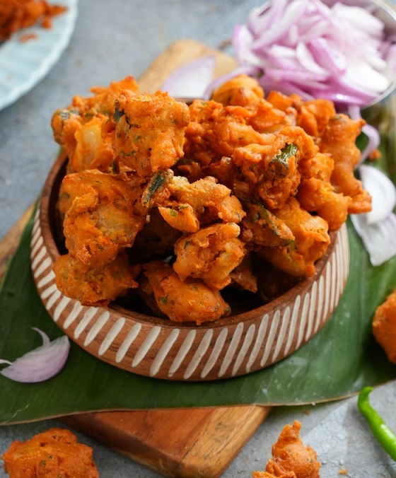

Indian food culture and its history comprise a rich tapestry of seasoning, traditions, and influences. With a history that stretches back thousands of years, Indian cuisine has evolved to include various dishes, ingredients, and cooking techniques.
Continue reading to discover more about Indian food culture, the history of Indian food, and more!
The Nature of Indian Food
One of the most distinctive features of traditional Indian food is spices. Indian cuisine is known for its bold and complex flavours due to the frequent use of spices, such as turmeric, cumin, coriander, ginger, and black pepper. These spices add a one-of-a-kind taste and have health benefits, mainly anti-inflammatory and antioxidant.
Another important aspect of Indian food culture is the use of herbs. Fresh herbs, such as cilantro, mint, and parsley, are commonly used in Indian dishes to add a burst of flavour and freshness. These herbs are also believed to have medicinal properties and are often used in Ayurvedic medicine.
The use of legumes, such as lentils, chickpeas, and kidney beans, is also a staple of Indian cuisine. These ingredients are a great source of protein and fibre, and they are often used in vegetarian and vegan dishes.
Indian cuisine is also known for its wide variety of bread types, such as naan, roti, and paratha bread. These types are often made with whole wheat flour, and they are served with a variety of curries and stews.

Different Areas, Different Foods
There are many different types of Indian food, each with its own distinct flavours and cooking techniques. Some popular types of Indian cuisine include North Indian, South Indian, East Indian, and West Indian.
| North India | South India | East India | West India |
|---|---|---|---|
| Achari baingan | Sambar | Malpua | Burfi |
| Paratha | Onion Pakodi | Alu Pitika | Dabeli |
| Makhaan ka kheer | Pulihora | Bora Sawul | Daal Dhokli |
| Missi roti | Idiyappam | Hando Guri | Cholafali |
Eg: Recipie of a south indian dish
Onion Pakodi
This Andhra Special Pakodi is made by mixing Besan, Rice flour, Soda and Ghee with Onion pieces. Onion pieces are squeezed and dropped into hot oil to make golden brown fritters.

Procedure